The table
Every game starts the same way: 28 cards dealt into seven piles with only the top card of each showing, and the other 24 face down in the stock.
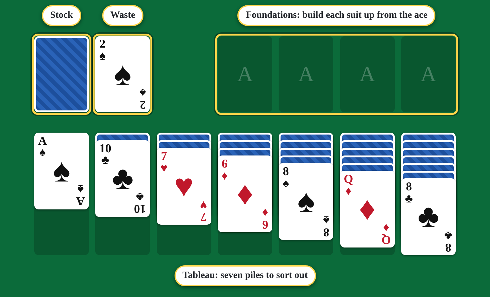
The goal
Get all 52 cards onto the foundations. Each foundation holds one suit, built from ace to king.
Moving cards
Click a card to pick it up (it gets a yellow outline), then click where it should go. Click it again to put it back down.
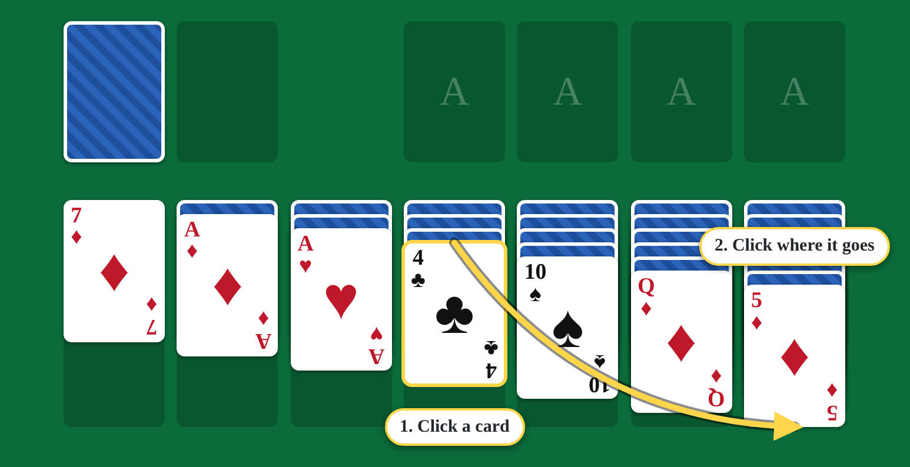
On the tableau, a card goes on one that is one rank higher and the other colour: a black 4 on a red 5, a red 9 on a black 10. When a move uncovers a face-down card, it turns over for you.
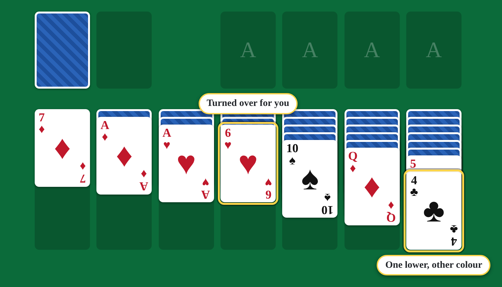
Moving several cards at once
Click the highest card of a run and the cards on top of it come along.
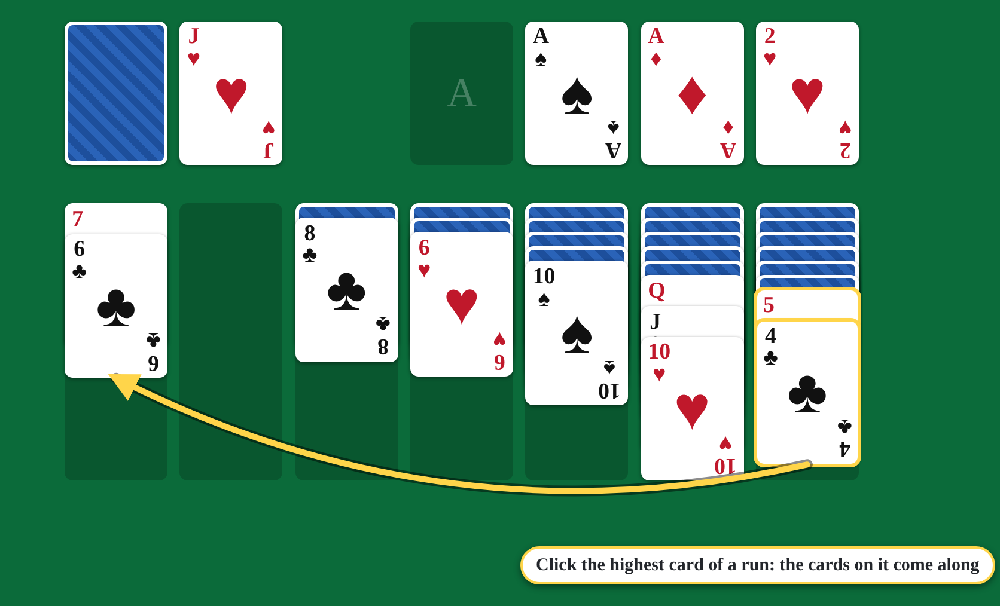
Empty piles
Only a king, or a run headed by a king, can go into an empty pile.
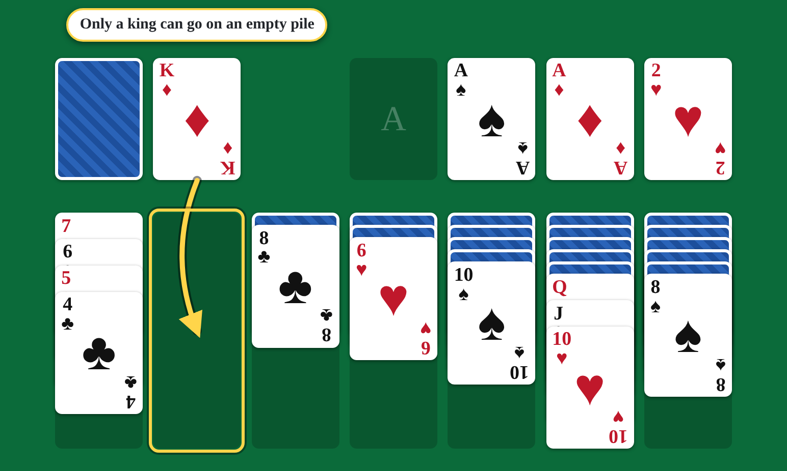
The stock and the waste
Stuck? Click the stock to turn up a card onto the waste. The top card of the waste plays like any other.
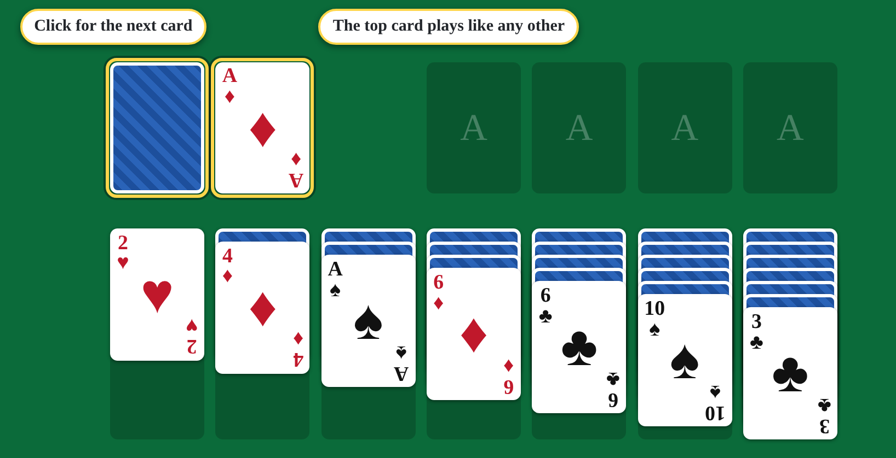
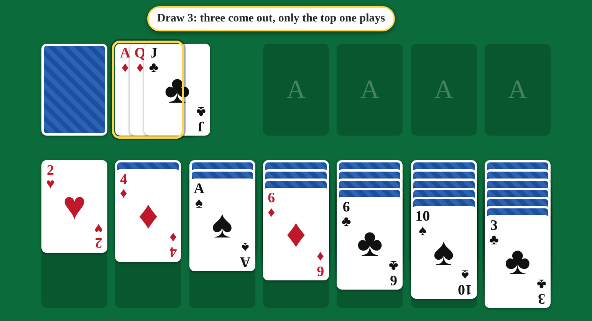
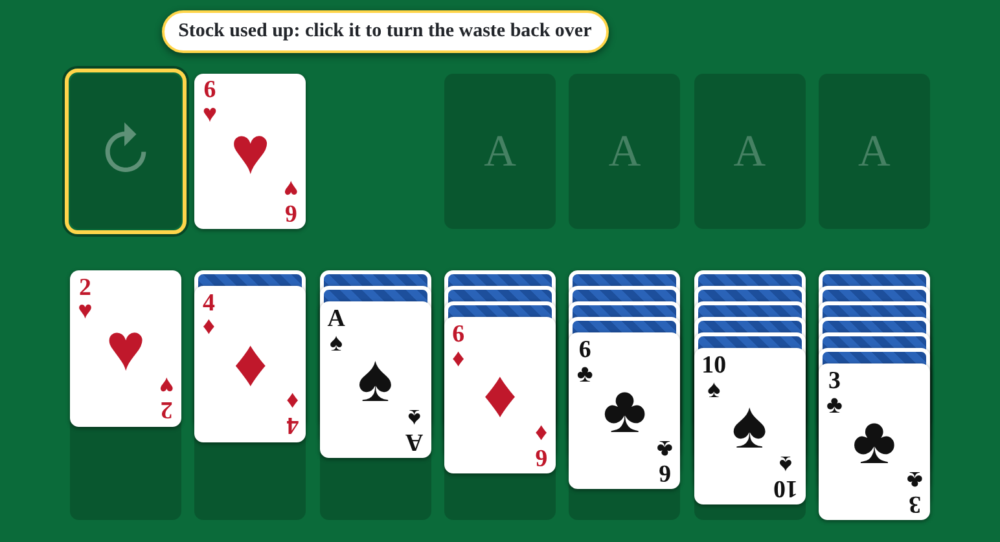
Foundations
Aces go up first, then the 2 of the same suit, and so on. Double-click a card to send it straight up, or pick it up and click the foundation.
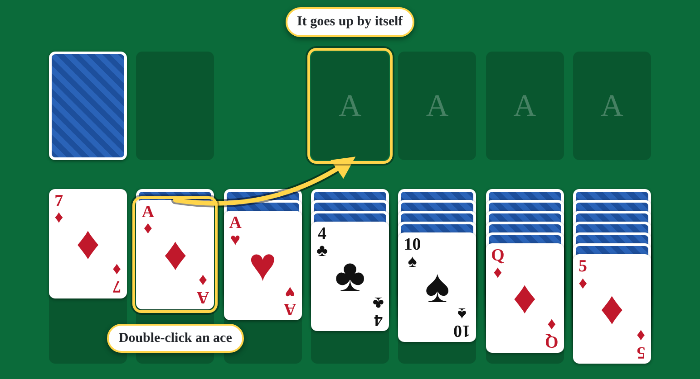
Changed your mind? A foundation's top card can come back down to the tableau, the same way as any other move.
Finishing
Once the stock and waste are empty and every card is face up, the game is as good as won. Make one more move and the rest of the cards fly up to the foundations by themselves.
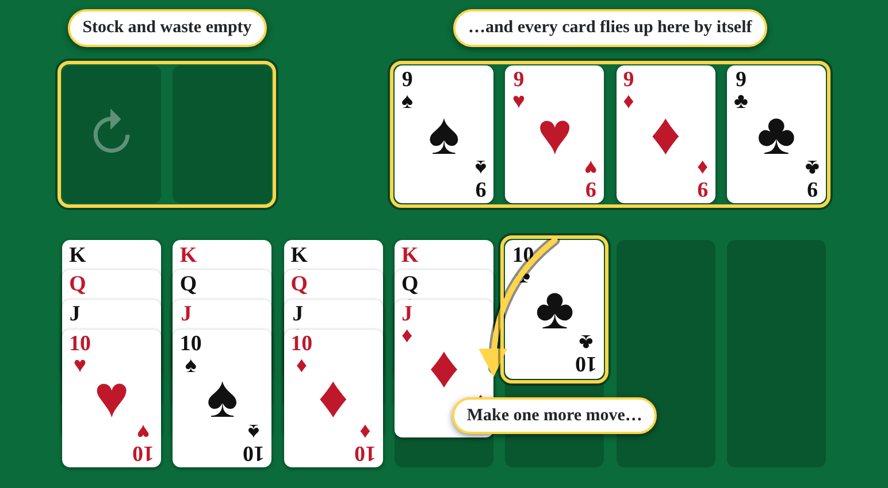
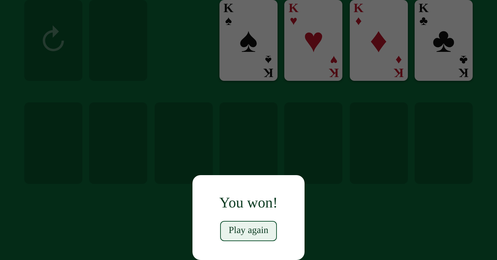
Tips
- Turning over face-down cards matters most. Work on the tallest piles first; they hide the most.
- Don't empty a pile unless you have a king ready for it.
- Don't rush cards up to the foundations. A low card on the tableau can still be a home for the next one down.
- Look at the whole tableau before you draw from the stock.
Quick reference
| Goal | All 52 cards on the foundations, each suit ace to king |
|---|---|
| Tableau | One lower, other colour; runs move together |
| Empty pile | King only |
| Stock | Click to draw 1 or 3; click the empty stock to start it over, as often as you like |
| Send a card up | Double-click it |
| Take a move back | Undo, as many times as you like |